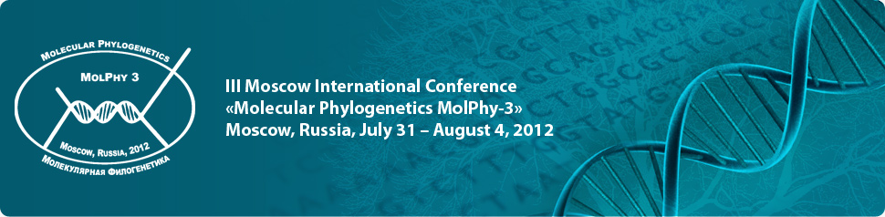

Society of Systematic Biologists
Home of Systematic Biology
Popular contentSyndicateCategories
User loginNavigationWho's onlineThere are currently 0 users and 1 guest online.
|
MeetingsMCEB - Mathematical and Computational Evolutionary Biology 21-25 June 2015 - Porquerolles Island, South of France
Webpage: http://www.lirmm.fr/mceb2015/ Pre-registration deadline: February 10th Notification to applicants: February 28th Final list of attendees: April 1st Scope: Mathematical and computational tools and concepts form an essential basis for modern evolutionary studies. The goal of the MCEB conference (at its 7th edition) is to bring together scientists with diverse backgrounds to present recent advances and discuss open problems in the field of mathematical and computational evolutionary biology. The theme of this yearís edition will be new data, new questions, new methods. New generation sequencing techniques have multiplied not just the amount, but also the types of genetic data produced, giving rise to new questions, and new methodologies to answer them. These methodologies are often cross-disciplinary, with applications to diverse research topics. General concepts, models, methods and algorithms will also be presented and discussed, just as during the previous conference editions. Frontiers in Phylogenetics 4th Annual Symposium videos onlineThe Frontiers in Phylogenetics 4th Annual Symposium entitled "Genome-Scale Phylogenetics: Analyzing the Data” will remain available to watch on Ustream-SI in unedited form in three parts. Part 1) Opening (Mike Braun, John Kress, Guillermo Orti), Lacey Knowles, Kevin Kocot, Ingo Ebersberger... http://www.ustream.tv/channel/Smithsonian-On-UStream-TV Part 1 http://www.ustream.tv/recorded/52713111 An edited version of the event will be available as a podcast on iTunes at a later date, to be announced. Genome-scale Phylogenetics: Analyzing the DataThe Washington Area Phylogenetics Consortium is pleased to announce the fourth annual Frontiers in Phylogenetics Symposium! Genome-Scale Phylogenetics: Analysing the Data Location: Warner Brothers Theatre, National Museum of American History, Washington, DC Time and Date: 9 AM to 5 PM, Monday September 15, 2014 REGISTRATION IS FREE BUT REQUIRED. Visit link below to register https://docs.google.com/forms/d/10p7xgDeAFOaVUHhxmQ6-fwf7E9N5lDJYfYf_PokQwmk/viewform?usp=send_form Mathematical and Computational Evolutionary Biology 2014
Frontiers in Phylogenetics at NMNH - Genome-scale PhylogeneticsWe are pleased to announce the 3rd Annual Spring Symposium hosted by Frontiers in Phylogenetics at NMNH: "Genome-scale Phylogenetics" Baird Auditorium, National Museum of Natural History
Frontiers in Phylogenetics Spring Symposium: Sequence Alignment and Tree EstimationBaird Auditorium TOPICS and SPEAKERS
Registration is free but required. Please send name, affiliation, e-mail and phone number to Sarah Kingston (kingstons 'at' si.edu). III Moscow International Conference “Molecular Phylogenetics MolPhy-3”, 31 July – 04 August, 2012 The conference mission is to provide a stimulating platform for the exchange of ideas and experiences in contemporary phylogenetics, molecular evolution and bioinformatics, and for developing methodology, algorithms, and applications for state-of-the-art analyses of molecular genetic data. The primary scope is in molecular phylogenetics and systematics, phyloinformatics, evolutionary genomics, reconstructing the Tree of Life, and applied phylogenetics. Systematics beyond phylogenetics: Annual meeting of the Société Française de Systématique - 201210 October 2012, Amphitheater of the INEE, 3 rue Michel-Ange, 75016 Paris. Mathematical and Computational Evolutionary Biology June 18-22, 2012, Hameau de l'Etoile (France)
The subject is evolution, which is considered at different scales, from genes to populations. The focus is on the mathematical and computational tools and concepts, which form an essential basis of evolutionary studies. The rise of sound statistical and combinatorial approaches in evolutionary biology has seen considerable improvements of the original ad hoc methods and the ability of the new methods and algorithms to handle ever-larger data sets. Such advances involve increasingly sophisticated mathematical treatment of the problems at hand and the reliance on faster algorithms and powerful computers to answer important biological questions. To present these advances and to discuss open questions and problems, the meeting will bring together researchers originating from various disciplines: mathematics, computer science, phylogenetics and population genetics. Ten keynote speakers, two each morning, will introduce a field of research and discuss their own work in this field. Afternoon will be for short presentations and posters, with plenty of time for discussions. We will stop early every day, thus leaving time for hiking and visits. The number of attendees will be limited to favor exchanges (~60). Call for Symposia for the 2012 SSB Annual Meeting, Ottawa, CanadaThe Society of Systematic Biologists invites proposals for symposia at the 2012 Evolution meeting to be held in Ottawa, Ontario, Canada from 6-10 July 2012. Deadline: for full consideration, please submit proposals by Sept 15, 2011. Proposals should include (1) a descriptive title, (2) one or two paragraphs explaining the purpose of the symposium and its relevance to systematics, (3) a list of presentations including proposed speakers, their institutions or affiliations, and their presentation titles, and (4) an indication of whether the speakers have been invited and whether they have agreed to participate. |
Latest issue
EVOLDIRphylobabble.orgiPhyloPhyloseminarSystematics AssociationNESCentThe Genealogical World of Phylogenetic NetworksCiteULike PhylogenyEvolutionary Bioinformatics
CladisticsBMC Evolutionary Biology
Molecular Biology and Evolution |
 Follow us on Twitter
Follow us on Twitter Find us on Facebook
Find us on Facebook
 The 2014 meeting will take place at Hameau de l'Etoile, in the Montpellier region (France), June 15-19. This year a special focus will be given to the applications of mathematical and computational evolutionary biology to the study of biodiversity in all its aspects: from its conservation to its ecology and evolution, from the diversity within a genome, to that between individuals within a species and that between species in an ecosystem. The number of attendees will be limited (~60), so as to favor small group interaction. See
The 2014 meeting will take place at Hameau de l'Etoile, in the Montpellier region (France), June 15-19. This year a special focus will be given to the applications of mathematical and computational evolutionary biology to the study of biodiversity in all its aspects: from its conservation to its ecology and evolution, from the diversity within a genome, to that between individuals within a species and that between species in an ecosystem. The number of attendees will be limited (~60), so as to favor small group interaction. See  Olivier Gascuel and Jean-Michel Marin are co-=chairing a meeting on Mathematical and Computational Evolutionary Biology to be held June 18-22 at Hameau de l'Etoile in France. See website (
Olivier Gascuel and Jean-Michel Marin are co-=chairing a meeting on Mathematical and Computational Evolutionary Biology to be held June 18-22 at Hameau de l'Etoile in France. See website (